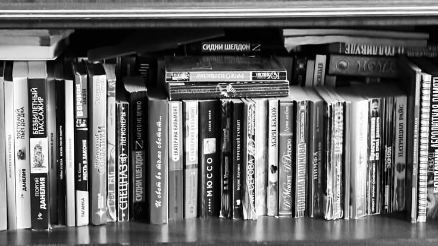

Literatura
La literatura es el arte de crear mundos con palabras. Desde los primeros mitos escritos en tablillas de arcilla hasta las novelas digitales y los audiolibros de hoy, leer y escribir siempre fueron formas de soñar, imaginar y entender mejor la vida. En la antigüedad, las historias se transmitían de manera oral: los pueblos contaban leyendas alrededor del fuego mucho antes de que existiera la escritura. Con el tiempo, nacieron grandes obras como La Ilíada, Don Quijote o Romeo y Julieta, que siguen inspirando películas, canciones y series hasta hoy. Un dato curioso: el primer libro impreso con una imprenta fue la Biblia de Gutenberg en el siglo XV, y cada ejemplar tardaba meses en hacerse. Además, algunos escritores famosos, como Franz Kafka o Emily Dickinson, no sabían que sus obras serían publicadas algún día: escribían solo por pasión. Hoy, la literatura se mezcla con la tecnología: podés leer desde el celular, escuchar podcasts narrativos o seguir historias interactivas en redes. Pero, sin importar el formato, la magia siempre está en las palabras
